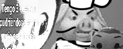

do you LOOOVE PIGS? well i do too. no i don't. im lying. i'm talking about FAMOUS FUNK-ROCK CHILEAN BAND CHANCHO EN PIEDRA. founded in '94 by some guys that kinda look like homeless metheads it is STATISTICALLY * (just saying anything atp) the BEST chilean band EEEVVVVVVEEEEEER.
ok so now for the part you were actually curious about, why is this a takeover?. i'll be INTENSELY BATTLING (clicking a button) empty or unused tiles to spread my CHEP PROPAGANDA.